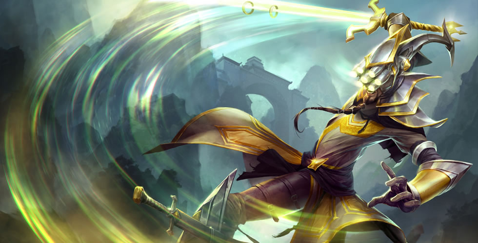
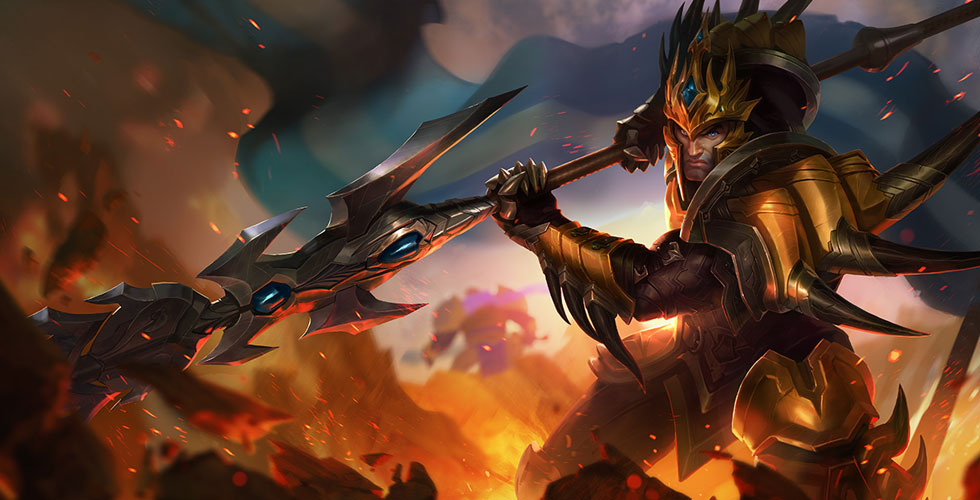
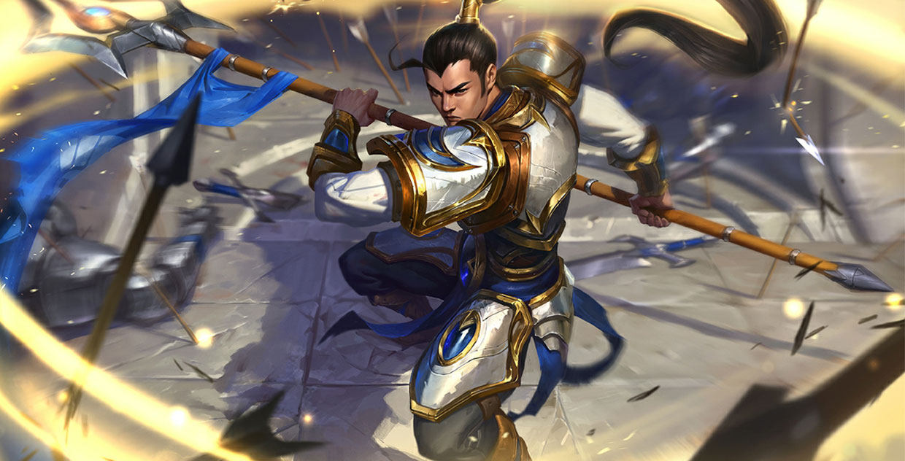
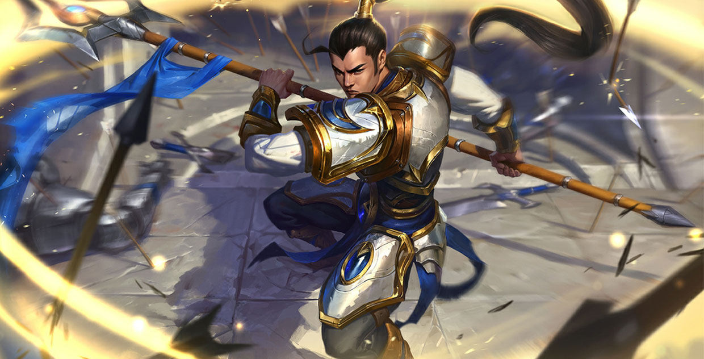
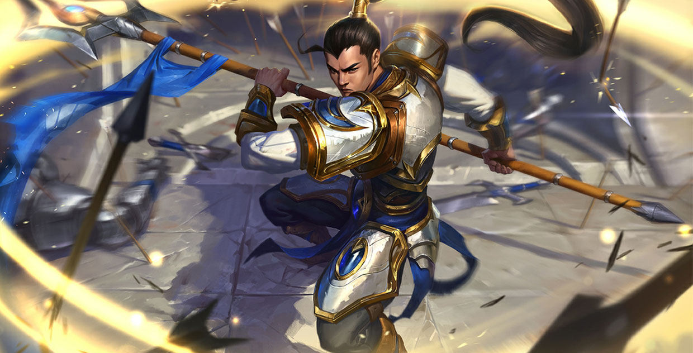
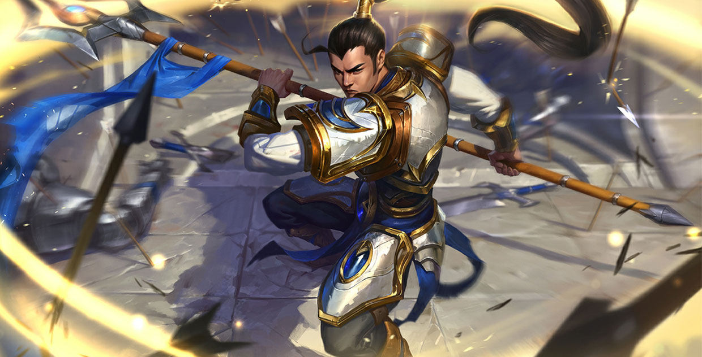

 


《英雄联盟》（英语：League of Legends，简称LoL）是由 Riot Games开发及发行的一款多人在线战术擂台（MOBA）游戏， 游戏为免费模式进行并提供付费道具服务。该游戏是 受到《魔兽争霸III：冰封王座》中一个名为DotA第三方自定义 地图启发而诞生，且至今仍不断定期更新。
在《英雄联盟》里，玩家扮演一个不可见的召唤师，并操控具有 独特能力的“英雄”与电脑AI或真人玩家控制的英雄对战，游戏通 常的胜利目标是要摧毁对方的主要基地“水晶枢纽”，在每场游戏 开始时，英雄是较弱的，但会随着游戏进展而升级。这些数值会 在下一场游戏重新开始时重置。
《英雄联盟》在电子竞技的领域里有着杰出的表现，自2011年 起，在北美和欧洲，Riot Games分别在洛杉矶和柏林组织了英 雄联盟全球总决赛，来自各地的十数个专业队伍在赛场上一决高 下[6]，而香港、澳门、台湾、韩国、南美洲等地也举办过区域 赛。在2016年的赛季的冠军战中，同时有1470万在线观看的观 众，该届的总奖金超过500万美金，冠军奖金为200万美金。

德玛西亚是一个实力雄厚、奉公守法的国家，有着功勋卓著的光荣军 史。这里非常重视正义、荣耀、职责的意识形态，这里的人民为此 感到强烈自豪。德玛西亚是一个自给自足的农耕社会，肥沃的耕 地、大片未砍伐的森林、以及矿产储量丰富的山脉遍及全境。德 玛西亚继承着排外、封闭的传统，一部分原因是蛮族、盗匪、以 及其他以侵略为本性的文明对其频繁地骚扰。有些人认为德玛西 亚的黄金时代已经过去，除非它能够适应新时代的变化——很多人 都认定绝无可能——否则它将不可避免地走向衰落。虽然存在争 议，但德玛西亚依然是瓦洛兰大陆上最具统治性的政治势力之 一，号称拥有整个符文之地上最为强悍精锐、训练有素的军队。